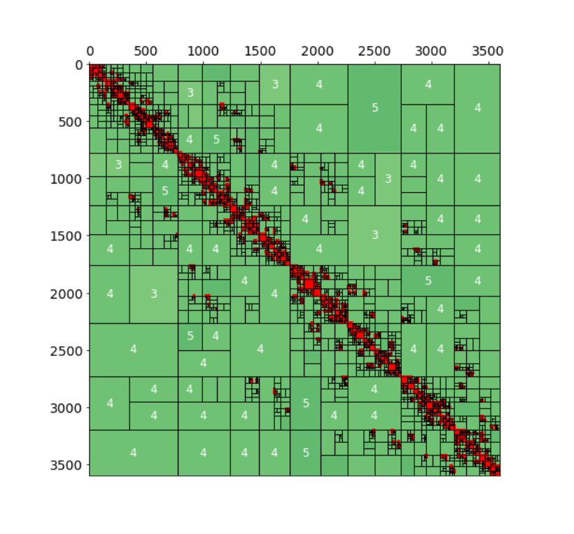

My research focuses on developing computational techniques for Bayesian spatial modeling. However, I am also is interested in numerical methods (within a deterministic approach) for spatial interpolation purposes.

In Progress
Cavieres, J., Krumscheid, S., 2025. Green’s Function-Based Thin Plate Splines Via Karhunen–Loéve Expansion For Bayesian Modeling.
Cavieres, J., Monnahan, C.C., Bolin., D, 2025. Approximated Gaussian random field: effects of parameterization on MCMC sampling.
Preprints
Journal Publications

Conferences & Workshops
Cavieres, J., Monnahan, C.C., Bolin, D., Bergherr, E., 2024. Approximated Gaussian random field under different parameterizations for MCMC. International Workshop on Statistical Modelling 2024, Durham, England.
Cavieres, J., Moraga, P., Monnahan, C.C., 2023. Bayesian semiparametric spatial model using Template Model Builder (). CFE-CMStatistics Conference 2023, Berlin, Germany.
Cavieres, J., Monnahan, C.C., Moraga, P., 2023.A semiparametric thin plate spline spatial model using Bayesian computation. Statistical Computing 2023, Günzburg, Germany.
Cure, M., Arcos, C., Araya, I., Escarate, P., Celedon, L., Cavieres, J., Pezoa, R., Olivares, E., Farias, G., 2022. Bayesian deconvolution of a rotating spectral line profile to a non-rotating one. XXXI General Assembly of international Astronomical Union, Busan, Republic of Korea.
Cavieres, J., 2021. Combining all the pieces together to create an efficient full Bayesian geostatistical model: The SPDE method in . 2do Workshop de Estadística: Contribuciones de Posgrado. Sociedad Chilena de Estatística (SOCHE).
Cavieres, J., Moraga, P., 2021. Fitting spatial random field models using and the SPDE approach: implementation via and a comparative study of two different parametrizations. End-to-end Bayesian learning, Marseille, France.
Cavieres, J., 2019. Incorporating the spatial dependence with physical barriers in a bayesian spatio-temporal model to obtain a relative index of abundance. StanCon2019, Cambridge, England.
Plaza, F., Cavieres, J., Salas, R., Nicolis, O., 2018. Deep learning approach for seismic risk assessment in Chile. XIV IEEE Latin American Summer School in Computational Intelligence.
Cavieres, J., Nicolis, O. 2016. Bayesian spatio-temporal modelling for analyzing the sea urchin (Loxechinus albus) fishery in Chile. COBAL V (Congreso de Estadística Bayesiana de America Latina) , Guanajuato, México.